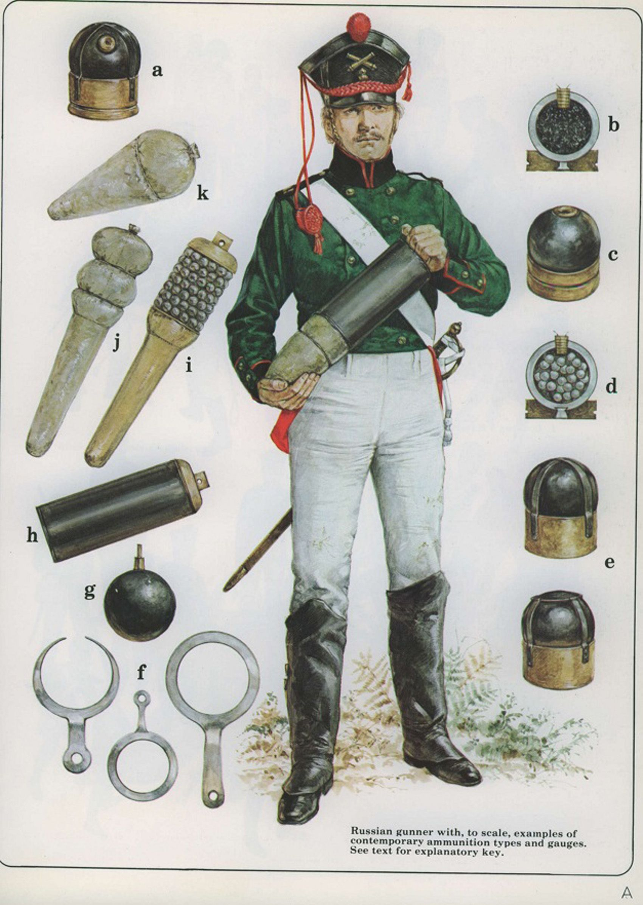
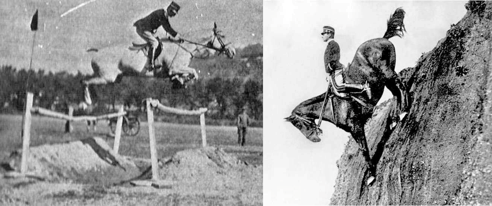
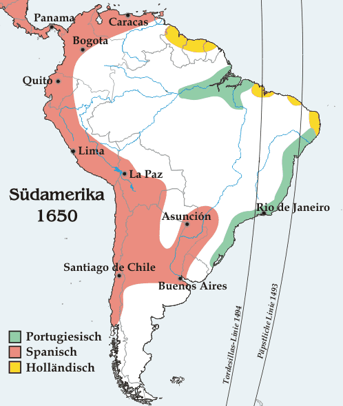

휴전 (2) - Uti Possidetis란 무엇인가?
게시: 2023-07-10T06:30:20+09:00
나폴레옹이 현상 타개책으로 내놓은 것은 휴전 제안이었습니다. 보통 휴전을 제안하는 것은 패배한 측이 하는 행동이었습니다. 그런데도 나폴레옹이 이렇게 휴전 제안을 한 것은 프랑스군도 어려움을 겪고 있었기 때문이었습니다. 러시아군보다야 좀 나을지 몰라도, 대부분 불과 4~5개월 전에 징집된 신병인 그의 병사들은 생전 처음 겪어보는 고된 행군과 격렬한 전투에 지쳐 있었습니다. 게다가 아무리 프랑스와 독일이 러시아에 비하면 물자가 풍부하고 길도 잘 닦인 곳이라고 해도, 뤼첸 전투를 위해 건넜던 잘러(Saale) 강으로부터 이제 건너야 할 오데르(Oder) 강까지는 400km 떨어진 먼거리였으므로 보급은 역시나 시원치 않았습니다. 병사들이 지치고 배가 고픈 것은 늘상 있는 일이라고 쳐도, 당장 각 연대에는 뤼첸-바우첸에 이어 3번째 전투를 치를 탄약이 충분치 않았습니다. 이건 식량과는 달리 현지 조달로는 해결될 수 있는 문제가 아니었습니다.

(식량에 대해서는 영국군은 민간업자에게 위탁했고, 프랑스군은 병참장교가 현지조달로 해결했지만, 탄약과 무기만큼은 모든 군대가 엄격하게 군 조직에서 조달하고 관리했습니다. 그도 그럴 것이, 지금 우리가 볼 때는 대충 쇳덩이와 화약만 있으면 될 것 같은 당시 대포에도 여러가지 부품과 소모품이 필요했고 그런 것들은 대충 해서는 절대 안 되는 것이었습니다.) 나폴레옹은 병사들을 쉬게 하고 탄약 보급을 하는 것 외에도 이번 휴전을 통해 꼭 얻고자 하는 것이 있었습니다. 바로 기병대의 재편성이었습니다. 기병대가 없이는 앞으로 승리한다고 해도 뤼첸과 바우첸의 반복일 뿐이라는 것이 분명했습니다. 전에 언급한 바가 있습니다만, 프랑스와 라인 연방에는 아직 말이 많이 남아 있었습니다. 다만 그런 말들을 모조리 징발할 경우 농업과 상업에 끼치는 타격이 큰데다 기병들은 물론 군마를 훈련시키는데도 시간이 걸리기 때문에 급한 대로 보병 위주의 군대를 먼저 끌고 나왔을 뿐이었습니다. 그 사이 후방 병영에서는 군마들이 계속 훈련되고 있었고, 나폴레옹은 이제 조금만 더 시간을 번다면 추격을 위한 기병대를 새로 편성할 수 있다고 판단했습니다. 그를 위해 그는 휴전이 가급적 길면 좋으나, 최소 2.5개월 이상이 되어야 한다고 휴전 조건을 명시했습니다.

(윗 사진들은 1906년 이탈리아 기병대 군마의 훈련 모습입니다. 기본적으로 말은 승마용과 마차 견인용으로 따로 훈련을 받습니다. 따라서 민간에서 마차를 끌던 말을 마구잡이로 징발하여 기병대에 배속시킨다고 기병마가 되는 것은 아니었습니다. 제가 가끔 인용하는 쿠아녜(Coignet)의 회고록의 저자 쿠아녜도 군에 사병으로 징집되기 전에는 프랑스군에 군납되는 기병마를 키우고 훈련하는 목장 마부로 일을 했습니다. 그가 키우고 훈련시킨 말들이 매우 훌륭하게 훈련되었다고 장교들이 칭찬했다고 합니다.) 다행이라고 할 만한 점은 나폴레옹은 바우첸 전투가 시작되기 전인 5월 18일, 드레스덴에서 출발하면서 이미 콜랭쿠르를 짜르 알렉산드르에게 보내 평화 협정 논의를 시작한 바 있었다는 점이었습니다. 당시엔 아직 승리할 수 있다고 믿고 있던 알렉산드르가 논의 자체를 거부했고, 실은 나폴레옹도 연합군에게 자신감을 심어주어 바우첸에서 결전을 벌이도록 유도하기 위해 평화 협정 제의를 한 것에 불과했습니다. 하지만 뤼첸에 이어 바우첸에서도 나폴레옹이 승리했기 때문에, 나폴레옹은 마치 바라는 것이 오직 유럽의 평화뿐인 관대한 승자 행세를 하면서 폼나게 휴전 제안을 할 수 있었습니다. 이번에도 그 제안은 콜랭쿠르가 들고 갔고, 그는 5월 27일 리에그니츠(Liegnitz) 인근의 아주 작은 촌마을인 노이도르프(Neudorf)에서 러시아 및 프로이센 측 대표들을 만났습니다. 한편, 5월 26일 륄(Rühle von Lilienstern) 소령과 짜르 알렉산드르의 소동 이후 연합군은 부어쉔 작전 계획에 따라 계속 남동쪽의 슈바이트니츠를 향하고 있었습니다. 이 소식은 다양한 보고를 통해 나폴레옹에게도 전달되고 있었습니다. 하지만 나폴레옹은 처음에는 연합군이 이렇게 남동쪽으로 퇴각 방향을 바꿨다는 말을 쉽사리 믿지 않았습니다. 이건 사실 믿고 싶지 않아서 믿지 않은 것이라고 할 수 있었습니다. 러시아군, 특히 그 총사령관인 바클레이는 슈바이트니츠로 가는 것에 대해 매우 불만이 많았지만 이건 나폴레옹으로서는 매우 거북한 시나리오였기 때문이었습니다. 보헤미아를 등진 슈바이트니츠의 연합군을 나폴레옹이 공격한다면 오스트리아의 참전을 촉발하기 쉽상이었습니다. 특히 연합군이 어찌 보면 막다른 골목이라고 생각할 수도 있는 그런 곳으로 간다는 것은 나폴레옹의 입장에서 보면 연합군과 오스트리아가 이미 뭔가 밀약을 맺었다고 밖에 생각되지 않는 일이었습니다. 그건 나폴레옹으로서는 악몽 그 자체였습니다. 또한 연합군이 슈바이트니츠로 간다면 나폴레옹이 나름 묘안이랍시고 계획한, 빅토르의 군단이 글로가우를 통해 오데르 강을 건너는 작전이 쓸모없게 되는 셈이었습니다. 하지만 언제까지나 현실을 부정할 수만은 없었습니다. 오스트리아가 참전하는 것으로 이미 밀약이 되었다면, 그 전에 조금이라도 더 유리한 조건에서 빨리 휴전 조약을 맺고 대비를 하는 것이 나았습니다. 그러자면 연합군이 슈바이트니츠로 향하는 것을 무시하고 당장 브레슬라우를 점령하는 것이 급선무였습니다. 나폴레옹은 휴전 조약을 맺으면서 '점유지 보호의 원칙'(uti possidetis, 라틴어로 대략 '점유한 대로 점유한다'는 뜻)을 주장할 생각이었습니다. 그러자면 슐레지엔의 수도이자 교통의 요지이고 또한 프로이센군의 근거지인 브레슬라우를 손아귀에 쥐고 있는 것이 유리했습니다.

(점유지 보호 원칙(uti possidetis)의 좋은 예가 스페인과 포르투갈의 남미 분할입니다. 원래 두 나라가 1494년 토르데시야스(Tordesillas) 조약을 통해 가상의 선을 긋고 그 동쪽은 포르투갈이, 서쪽은 스페인이 나눠 갖기로 할 때만 해도, 두 나라 모두 남아메리카가 얼마나 큰 대륙인지 전혀 모르고 있었습니다. 나중에야 그 조약에 따르면 포르투갈은 브라질 한쪽 귀퉁이만 얻게 되는 것이 밝혀졌지만, 포르투갈은 토르데시야스 조약을 무시하고 계속 서진을 계속하여 오늘날의 브라질을 차지했습니다. 나중에 스페인의 항의를 받자 포르투갈이 주장한 것이 uti possidetis였고, 결국 이는 1750년 마드리드 조약으로 인정됩니다.) 그렇게 브레슬라우를 향하며 나폴레옹은 콜랭쿠르의 협상이 잘 진행되기를 기대했습니다만, 5월 29일 밤에 마침내 날아든 콜렝쿠르의 편지는 그를 크게 실망시켰습니다. 협상은 완전히 결렬되었는데, 특히 오데르 강을 경계선으로 하자는 그의 제안에 대해 프로이센이 기겁을 하며 결사 반대를 했다는 소식이었습니다. 그들은 오히려 나폴레옹이 상(上) 슐레지엔에서 완전히 철수해야 하며, 글로가우와의 소통로도 다시 포기해야 한다고 주장했습니다. 그러나 나폴레옹은 휴전 협정을 계속 하기를 원했습니다. 그가 5월 30일 새벽에 콜렝쿠르에게 보낸 편지를 보면, 그들이 '점유령 보호의 원칙'을 무시한다면 협상을 중단하고 즉각 돌아오라고 하면서도, 그 전에 이러이러한 최근 소식을 연합군 협상단에게 전달하여 그들이 정신을 차리도록 하라고 했습니다. 히지만 그런 주요 소식이라는 것은 별로 큰 의미도 없고 시시콜콜한 소식들뿐이었습니다. 최근에 100명의 코삭 기병과 12명의 장교를 포로로 잡았으며 함부르크도 5월 24일 다부 원수가 재점령했는데 덴마크군 1만8천이 다부 원수 휘하에 들어가기로 했다는 등등 대세와는 전혀 무관한 것이었거든요. 나폴레옹이 얼마나 휴전을 원했는지는 브레슬라우를 향해 달려가던 프랑스군의 움직임에서 여실히 드러났습니다. 그는 정작 브레슬라우 근처에서 눈에 띄게 미적거렸습니다. 브레슬라우를 코 앞에 둔 로리스통에게 나폴레옹은 브레슬라우에 미리 전령을 보내 '너희는 곧 점령당한다'라고 포고문을 전달할 것과, 거기에 도착하더라도 즉각 입성하지 말고 그냥 그 성문 앞에서 숙영 캠프를 치되, 치안 유지 및 오데르 강을 가로지르는 브레슬라우의 다리를 확보하기 위한 병력만 브레슬라우 시내로 진입할 것을 명령했습니다. 그리고 나폴레옹 본인은 노이마륵트(Neumarkt)라는 작은 촌마을에서 8일이나 머물며 이런저런 군사 외교 행정 등의 사무를 보았습니다. 이는 그 도시를 애지중지하던 프리드리히 빌헬름에 대한 명백한 제스처였습니다. 이렇게 승전을 하고도 휴전을 거의 애걸복걸하는 나폴레옹에 대해 연합군은 어떤 대응을 보였을까요? Source : The Life of Napoleon Bonaparte, by William Milligan Sloane Napoleon and the Struggle for Germany, by Leggiere, Michael V https://www.pinterest.co.kr/pin/252764597815173109/ https://www.worldwar1centennial.org/index.php/brookeusa-training-for-war.html https://en.wikipedia.org/wiki/Uti_possidetis